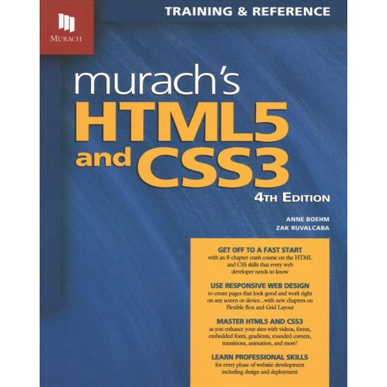

Well, it looks like I'm back in the saddle again. Although it might look like I've taken some time off, I've actually just been working on the freeCodeCamp course for Javascript. IT was no easy task, but, with a little perseverance, I made it through. I wish I had a little extra patience with some of the courses but between learning programming, having a family, working full time and taking care of elderly relatives during a global pandemic, I can forgive myself for skimming a few courses. I'm currently working on getting comfortable again in Visual studio Code as well as Github; where I'll be uploading code daily (fingers crossed) for the next 365 days to track my progress and give myself a visual of what I have learned. I'll also be updating this journal regularly as well as it's a great way for me to expel some of my thoughts. I don't need to reread any of this, but it is a good discipline. If you're at all interested in journaling, I suggest you look into Marcus Aurelius's Meditations. Marcus Aurelius was a Roman Emperor and practitioner of the stoic philosophy which I've been aware of for many years, but recently been able to put into practice this last year what with the panic I witnessed during the first wave of the pandemic. I hope you got some information from this, and until next time. Peace!
After cleaning up an UN responsive webpage, I added a Media Query where decided to take my clean code, copy and paste it into the media query and delete what was not being used and chang that which would be used. It made making a page responsive seem much faster. I also added some pretty neat little effects like hover effects and active effects with CSS to make give my page a little more character. I intend to keep a minimalist feel with my portfolio while adding what I would consider "higher-tech" code just behind the simple and minimal look; think of a sleeper car. Something simple looking but when a feature is activated, it isn't activated in a mundane fashion. Once I have finished this I tested out the responsiveness of my page in a browser, and found was satisfied. I uploaded, published and went live with that page, and tested again on my mobile device but found the page was not responsive at all. I did little digging (that you Stack OVerflow) and found that I needed to add a special tag in the head of my HTML file that reads as such <meta name="viewport" content="width=device-width, initial-scale=1"> After adding this, I re-upload and went live and tested again with my mobile device and voila! Success. I sent out a tweet to a few people on Twitter who I have been following and I know to be credible coders and now I'm awaiting feedback. Hopefully the best :) Until tomorrow. Peace!
Got to my computer late today and did some work on cleaning up my main page's html and css. I added a few more tags to my html such as a div container to my "skills" icons. I cleaned up the classes a little and made them more "universal" and added some IDs. I added those into my CSS and utilized some DRY practices. My entire intentions for this were to clean up my code and make my page more responsive.
So a few days ago, I created a page that I called sandbox to test out that parallax effect and today I copied over my entire home page (in all) to edit it up and make it look pretty to get started on the mobile responsiveness of it. I'm not pretty pleased with a couple insightful things that came from reading that article yesterday, which caused me to clean up my code a bit, but in doing so I managed to jumble a couple objects and elements that I definitely did not intend to jumble up. Any ways, I'll fix those tomorrow. I feel like I've done enough for the time being and this rain outside is just way too cozy to not take a nap in :) Until tomorrow. Peace!
Due to some family affairs, I'm starting my studies a little later monday through thursday, so I'm not getting as much quality time as I was before, but this morning, I read an EXCELLENT article that put my HTML into perspective. If you're learning coding right now, I highly suggest you take a look at that article. It's priceless. HTML is a markup language and as such shouldn't take very long to learn. After reading that I realized I need to put a little more attention into my HTML when I'm marking up my pages before I even hit CSS. that article just completely threw me a (much needed) curve ball. I'm really glad I read it. Today, I didn't code as much as I would have liked to. Again, I just played around with menial tags here and there and didn't do much in the way of learning a whole lot. Anyways. Until tomorrow.
Was meandering through my projects and decided to change up my Coffee Shop project. There's a small cafe down the street from me that I've never been in (they have peculiar hours). I decided to check out their website and found it to be incredibly dull. So my coffee shop project will be for that cafe. Also, I decided to follow a tutorial on creating a parallax effect with HTML/CSS only and it seemed to be a pretty nice effect, but I must admit, it seemed a little bulky in CSS than I felt comfortable with. I have a feeling JavaScript will reduce some of that. I'll know more when I get into Javascript in February. Until tomorrow
Came by early in the morning and stayed for a bit. I decided to upload what I had updated of my website and requested feedback from the Twitter community. I got some excellent feedback. Primarily people mentioned that I should update my website and make it more mobile friendly. I was a little afraid this would be the case. There was a part of me thinking that no one would notice due to the simplicity of the page, but the other part of me knew that the mobile responsiveness is the weakest link of my website. Anyways. I took those criticisms with good spirits and that is now a part of my top priorities in coding after this last little project I'm working on.
Due to a couple tasks I needed to get done here at the office, I decided to stay the night again last night. Today was nothing more than small HTML/CSS tasks again, nothing really notable to mention today.
stayed the night at the office last night and got as much as I could to get done. I feel like I hit a brick wall today. Instead of hitting the tutorials, I decided to go for a walk and try hard to think about what it was I was doing right/wrong and by the time I came back, I had a fresh mind to think about things clearly. I was able to get over my hurdle. I'm refraining from mentioning the mishap for a couple reasons. 1) it was a VERY elementary mishap and 2) It was so easy to fix that I actually forgot what the exact fix was. This, I've come to find, is the essence of coding. Until tomorrow.
Started working Friday night. Did some very menial and repetitive tasks with minor HTML tags and CSS selectors.
Today was a pretty productive day. I've recent;y been given a little bedroom at a relatives house that I can turn into a small workspace. and for that I am eternally grateful. This will boost my productivity tons and today was my first time working in here. So far, in the first hour or so of coding, I noticed I was way more focused and attentive to what I was doing, why I was doing it and how I was feeling while doing what I was doing. This is huge if you're into coding because when you pay attention to those small things you start to understand the "WHY" of the work and the "why" is a huge teacher when learning anything. This workspace for me has been a big help and I can't wait to continue on this journey while utilizing this workspace. Today I worked on making the product landing page more responsive. I adjusted the video and the images as well as created a Media Query and did some reading on Media Queries as well. I'll probably be doing some more reading later today when I'm on my lunch at work; that's the best part about books and reading. You can pick up where you left off at any time of the day for any amount of time and just put it down whenever, it's better than watching sometimes. Anyways, until tomorrow, We'll talk soon. Peace!
Today I worked on getting the buttons looking nice. I used the :hover effect for the first time to add a little character to the buttons as well as styling them to look nice and accent the company's color scheme of the product. I'm working on making the header fixed right now but I'm trying to understand why when I position it fixed, It keeps moving out of the workflow and collapsing. Not quite sure why, I'll do some research on it later and find out why.
WOW! Today I got a lot of work done on the the product landing page today. I worked on the header a little, as well as separating some of the elements from each other with borders and backgrounds as well as making sure everything is centered and looking a little more pleasing to the eye. I'm pretty happy with the work that was put into today and I'm looking forward to touching up a few more elements tomorrow.
Today I decided to work a little more on the CSS side of things. For some reason I didn't have as much energy as I would have liked. I fell asleep a short while into it. I was also working at my aunt's house where I was sitting in a massive comfy Lay-Z-Boy chair, so there's that too. But back to the topic at hand, I did some more CSS work on the landing pae bringing in the margins a little bit on both sides and adding borders around some of the sections to visually separate my work. I didn't really do much else other than that. Oh yeah! I didn't finish the first chapter of this book:

which was mostly information I was already privy to, however there are little gems in the first chapter that make it worth reading. I really like the teaching method in this book. There's something about the way the author goes over the information with you that makes it feel like you're right along with him as you're learning it. Kind of like the author is subtly quizzing or testing you as you're moving along the learning process. So after finishing the chapter the author gives you a few tasks or exercises to do to apply a more hands on approach to reading which is what every computer or code related book needs anyways. So I'll get started on that tomorrow. and, until then. Peace!
Today I created a custom background image to my product landing page. It took WAY longer than I wanted it to take, but I think it was worth the work and time it took. It added a new dimension to the landing page. It really brings it all together in a sense of the word. I also started redoing my CSS. What I've learned about myself is when I take CSS a little slower, it's easier to keep track of. So after commenting out all my CSS work that was done in the previous versions of the landing page, I am able to slowly add rules that will ultimately bring everything together in a more organized fashion. Anyways, that's pretty much it for the day. Thanks for following along with me on this journey. Until tomorrow. Peace.
Today I stayed in with the family. I didn't code at all. This was actually the first day I missed coding for my 100 days of code challenge. Now, I know there are some soft rules when partaking in this challenge, but I also know that if a day is missed, it is best to retake that day after your 100 days are up. Like making that day up after the fact. Anyways, I'm not going to make any excuses. Thats not why I'm writing this, but I will say this about missing a day; I felt like something was way off throughout the entire day! I felt like I was missing something. Imagine feeling like you forgot your keys, wallet or cellphone throughout the entire day. It was a horrible feeling. I'm hoping I don't repeat that again. This was a startling reminder that habit makes us who we are. As alway, until tomorrow. Peace!
Today I commented out my CSS for my product landing page to wor on the more semantic HTML without being concerned with the beautification or formatting of the page itself. I applied a few more elements to the pag including an embedded video, an email button. I deleted a few elements that I thought were redundant or superfluous without the CSS being involved. I learned that not very many browsers use the Video element from HTML5 and I am left using the iFrame element. which is fine, but it makes me wonder why a Video element even exists at all. Either way, I got a video on my page by using the iFrame element. I also started creating image placeholders. I'm not quite sure if this is a tool that a web developer would use, but it seems like a good idea. I'm creating various aspect-ratio, grey JPEG images to apply to web pages in place of an image while it's either being hunted down, pending copyright, or being shot/created. Anyways, It's time to run for now, but I'll be back tomorrow again. Peace!
Today was a little more about learning. I started early and decided that I wanted to work explicitly on my product landing page. I adjusted the background and did a little research on other product landing pages to see what I can adjust to make my product landing page more appealing. As someone who is starting out I didn't want to spend more time looking at other sites and getting intimidated so I decided to grab a little here and there and apply it to my product landing page. In doing so, I figured the pricing tier was a nice touch and a "Buy now" button within each box was a nice touch. I adjusted the background color to a plain white as I thought the gradient was distracting. I also added a slight shadow the boxes to make them pop, but I don't know how I' feel about that later after revisiting later. We'll know soon enough. I did notice something about this round of coding though that I lost track of earlier on in my coding. And that is this, I need to spend a little more time with HTML and making sure my markup is semantically correct before I move on to my CSS. This is something I really need to pay attention to on my next project. I feel like we (new coders) start out excited and don't follow the proper procedures and when the project gets out of hand, we will give up thinking "There's no way I can be a coder, this is too complicated." I need to remember that HTML is a lot like a lover, be patient with it and make sre you give her all she needs before you worry about what makes you look good. Be good to HTML and she'll be good to you. Until tomorrow, Peace!
So today, again, two days in a row, I slept in, and I have another reason! I was up all night tossing and turning with a stuffy nose and a cough (I had a cold). It's all good though. I started working on my product landing page sometime in the afternoon and I got to the pricing portion of the page in which I have three pricing options in three different containers centered in the middle of the page. After a little fussing around with them trying to get them centered correctly, I realized I had forgotten how to center my divs within divs (I know, in retrospect, duh, right?) but I did a quick search on my trusty YouTube and found a video and decided to scroll the comments and I realized many people had the problem of remembering this specific task, which after watching the video was so obvious again. Anyways, I played around with my product landing page a bit and had to run to work. All in all it wasn't AS productive as I would have liked, but it was productive enough. Until tomorrow, I'll talk to you guys later.
First entry of the year and, well, first entry of the blog. I got this idea to write an all HTML blog (or at least a 99% HTML blog) while showering (Where all great ideas come from) and listening to this John Morris podcast on YouTube. It was an interesting podcast that you can listen to here about how one can find a job knowing HTML and CSS only. John Morris said something interesting regarding that. He suggested getting out of a "languages I know" mindset and getting into a "Jobs I can accomplish" mindset which mate a LOT of sense to me. I'm planning on writing in this blog every day and documenting my journey into programming. Before you start in on my about the semantics, I know that what I'm learning right now is NOT programming at all, but this is the first step in my journey INTO programming. I'm currently learning HTML and CSS. HTML (Hypertext Markup Language) is, well, a Markup language. It's a language used to markup a webpage in a semantic manner. CSS (Cascading Style Sheet) on the other hand is a styling language that, when linked to am HTML document, is used to beautify or style the HTML. Today was an interesting day. Firstly, I slept in for the first time in ages. Yesterday being New Years eve, I stayed up a little late with the family and watched the (3 hour late) ball drop in New York. It's now 11:45 pm, and I'm about to hit the bed and get some rest so I can wake up bright and early and start in on my day 69 of my 100 days of code. Oh, and also, this is my day 68 of coding work since I got this bright idea late at night and I didn't have a chance to code this morning because I slept in with the family. Hey, we're all entitled to take a day off, aren't we? Thank you for raking the time to read this and I'm looking forward to having you read along with me on my journey. If you're interesting in reaching out to my, you can catch me here on my website where you can find all my contact info at the bottom of the page. Thanks and I'll talk to you all soon.